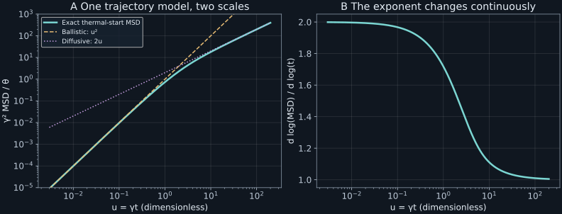

Chapter 10 · Lectures 12–13
Velocity relaxation and the emergence of spatial diffusion
A particle-tracking instrument measures displacements at successively shorter delays. A diffusion fit assumes that their variance is proportional to the delay. At a delay equal to the velocity relaxation time, that fit overestimates the actual thermal-start mean-square displacement by a factor of about 2.72. At shorter delays, the particle retains its velocity and the displacement variance is quadratic in time. The task is to decide which temporal resolution permits a diffusion description, while retaining a model that remains consistent with thermal equilibrium.
The topic sequence follows NPTEL lectures 12 and 13: thermal Langevin balance, velocity relaxation, covariance, spatial diffusion, and joint phase space. The conditional covariance formulas, exact joint-update laboratory, finite-resolution comparison, and exercises are developed here. Caption reading and sampled-frame coverage are recorded separately; neither establishes continuous audiovisual review.
10.1 A random force needs a dissipative partner L12 4:03
Let $m\gt0$ be a particle's mass, $X_t$ its position on a line, and $V_t$ its velocity. Time $t$ is nonnegative. Their units are kilograms, meters, meters per second, and seconds. The particle sits in a stationary fluid bath at absolute temperature $T\gt0$. Write $\theta=k_BT/m$ for the thermal velocity variance, with units of squared velocity; $k_B$ is Boltzmann's constant. The bath is assumed large enough that observing the particle does not change its temperature.
A standard Wiener process $W_t$ starts at zero, has continuous paths with probability one, and has independent Gaussian increments with mean zero and variance equal to the elapsed time. Thus $dW$ has square-root-time units. A force consisting only of uncorrelated kicks would give $dV=b\,dW$, for a constant noise amplitude $b$ with units velocity per square root of time. Its solution is $V_t=v_0+bW_t$ for a specified initial velocity $v_0$. Consequently $\mathbb E[V_t^2]=v_0^2+b^2t$. The kinetic energy grows without bound. Changing white kicks to a finite positive-correlation force alone does not supply the energy removal required by equilibrium.
At low particle velocity relative to the bath, introduce a linear drag force $-m\gamma V$, with relaxation rate $\gamma\gt0$ in inverse seconds. The dimensional drag coefficient is $m\gamma$, not $\gamma$. Our inertial Langevin model is
$$dX_t=V_t\,dt,\qquad dV_t=-\gamma V_t\,dt+b\,dW_t.\tag{10.1}$$The two deterministic equations say that position advances at the present velocity and that velocity relaxes toward zero. Noise acts in the acceleration equation. Position is therefore differentiable with derivative $V_t$, even though the idealized velocity is not differentiable. This distinction will determine which threshold-crossing formulas can be used in chapter 14.
For a short interval $h$, conditional on current velocity $v$, the stochastic increment has $\mathbb E[\Delta V\mid v]=-\gamma vh+o(h)$ and $\mathbb E[(\Delta V)^2\mid v]=b^2h+o(h)$. The latter term survives because a Wiener increment has variance $h$, although its mean is zero. Expanding $(v+\Delta V)^2-v^2=2v\Delta V+(\Delta V)^2$, dividing its conditional expectation by $h$, and taking the limit gives the quadratic moment rate $-2\gamma v^2+b^2$. Averaging over the finite-second-moment velocity law yields $d\mathbb E[V_t^2]/dt=-2\gamma\mathbb E[V_t^2]+b^2$. A stationary second moment equal to $\theta$ therefore requires $b^2=2\gamma\theta$. This is the quadratic instance of the Itô rule; the noise variance term would be lost by ordinary differentiable calculus. ∎
The condition is an equilibrium consistency requirement within the white-noise, constant-friction model. It does not prove that every fluid has memoryless drag. Once imposed, it ties the fluctuation strength and damping to the same temperature. Increasing $\gamma$ at fixed $T$ strengthens both the velocity damping and the kicks per unit time, keeping the stationary velocity variance unchanged. It reduces the persistence of motion and therefore reduces spatial diffusion.
10.2 The complete velocity transition law L12 16:02
Specify $V_0=v_0$ deterministically and assume future Wiener increments are independent of that initial value. Multiplying the velocity equation by $e^{\gamma t}$ cancels its drift. Integration gives
$$V_t=v_0e^{-\gamma t}+\sqrt{2\gamma\theta}\int_0^t e^{-\gamma(t-s)}dW_s.\tag{10.2}$$The stochastic integral is a limit of linear combinations of independent Gaussian increments. Its deterministic integrand makes that limit Gaussian. The mean is zero, and the Itô isometry says its variance is the integral of the squared integrand. This supplies the Gaussian property that a moment calculation alone could not establish.
Apply the preceding Gaussian-integral argument to (10.2). The integral's variance is $2\gamma\theta\int_0^t e^{-2\gamma(t-s)}ds=\theta(1-e^{-2\gamma t})$. Adding a deterministic shift supplies the mean and leaves the variance unchanged. Normalization is the Gaussian integral. This proves the entire law, rather than merely matching its first two moments. ∎
At $t\downarrow0$, its variance approaches zero and its mean approaches $v_0$. The density tends to a Dirac mass in the distributional sense: its integral against every bounded continuous test function tends to that function evaluated at $v_0$. Substituting zero into the positive-time density formula would divide by zero. At long times the law approaches the Maxwell Gaussian of variance $\theta$, independently of $v_0$.
The corresponding forward equation is $\partial_t\rho=\gamma\partial_v(v\rho)+\gamma\theta\partial_v^2\rho$. It has probability current $J_v=-\gamma v\rho-\gamma\theta\partial_v\rho$, so $\partial_t\rho=-\partial_vJ_v$. On the whole velocity line, impose vanishing probability flux at infinity. A stationary density then has zero constant current, giving $\partial_v\log\rho_{\mathrm{eq}}=-v/\theta$ and hence $\rho_{\mathrm{eq}}=e^{-v^2/(2\theta)}/\sqrt{2\pi\theta}$. Normalizability and the selected boundary conditions matter; a stationary differential expression alone is not a boundary-value problem.
A non-Gaussian initial velocity distribution generally remains non-Gaussian at finite times. Equation (10.2) adds an independent Gaussian to a contracted initial variable; it does not instantly erase all initial cumulants. Gaussian transition kernels therefore coexist with non-Gaussian evolving marginals. Full stationarity requires the invariant initial law, not merely the correct noise amplitude.
10.3 Which ensemble makes velocity stationary? L13 4:51
Now draw $V_0$ from the zero-mean Maxwell Gaussian with variance $\theta$, independently of future noise. For $t\geq s$, split the solution at time $s$: $V_t=e^{-\gamma(t-s)}V_s+\sqrt{2\gamma\theta}\int_s^t e^{-\gamma(t-r)}dW_r$. The second term is independent of $V_s$ and has zero mean. It follows that the stationary covariance is
$$C_v(\tau)=\mathbb E[V_{s+\tau}V_s]=\theta e^{-\gamma|\tau|}.\tag{10.4}$$The one-time variance stays equal to $\theta$ by Proposition 10.1. All finite-dimensional vectors are Gaussian because they are linear functions of the Gaussian initial value and Wiener increments. Their zero means and time-shift-invariant covariance determine their laws, establishing strict stationarity. This argument requires a jointly Gaussian process, a stronger condition than Gaussian histograms at individual times.
For deterministic $v_0$, the centered two-time covariance is instead $\theta[e^{-\gamma|t-s|}-e^{-\gamma(t+s)}]$. This follows by integrating the product of the two noise kernels only up to $\min(s,t)$. The extra term remembers the zero initial variance. Adding the random thermal initial velocity contributes $\theta e^{-\gamma(t+s)}$ and cancels it. Conditional and stationary averages must not be interchanged.
A precise Gaussian–Markov qualification
A useful part of the classification mentioned in lecture 13 can be proved directly. Let $Y_t$ be a real, centered, stationary Gaussian Markov process with positive variance $c_0$ and continuous covariance. Define its normalized covariance $r(t)=\mathbb E[Y_tY_0]/c_0$. Gaussian regression gives $\mathbb E[Y_{s+t}\mid Y_s]=r(t)Y_s$. The Markov property permits conditioning on the past to be replaced by conditioning on $Y_s$. Multiplying by $Y_0$, taking expectations, and using stationarity gives $r(s+t)=r(s)r(t)$ for nonnegative $s,t$.
Continuity and $r(0)=1$ imply $r(t)\gt0$: if it vanished at some time, repeated halving would contradict continuity at zero; also $r(t)=r(t/2)^2\geq0$. The continuous additive function $\log r(t)$ is linear, so $r(t)=e^{-\gamma t}$. The covariance bound $|r(t)|\leq1$ requires $\gamma\geq0$. The case $\gamma=0$ is a time-constant random variable; the nonconstant case has $\gamma\gt0$ and the OU covariance. Joint Gaussianity then fixes its finite-dimensional law. This proves the stated restricted classification, including its degenerate exception.
Continuity, stationarity, or exponential correlation alone is insufficient. The two-state process of chapter 6 has exponential correlation but is non-Gaussian. A mixture of independent OU modes with different relaxation rates is stationary Gaussian, yet its summed covariance is not a single exponential and its scalar observation generally loses the Markov property. Correlation shape therefore tests a state model under specific distributional assumptions.
10.4 The displacement crosses from ballistic to diffusive L13 15:24
Take $X_0=x_0$ fixed and the stationary thermal velocity ensemble. The displacement $\Delta X_t=X_t-x_0=\int_0^tV_sds$ has zero mean. Its mean-square displacement, abbreviated MSD, equals its variance. Squaring the integral and taking expectations gives an integral of the covariance over a square in the two time variables. The covariance is even, so the two triangular halves contribute equally.
Integrate (10.4) over the lower triangle: $2\theta\int_0^t ds\int_0^sdr\,e^{-\gamma(s-r)}$. The inner integral is $(1-e^{-\gamma s})/\gamma$. Integrating once more gives (10.5). All terms have squared-length units, and $D$ has units length squared per time. ∎
For $\gamma t\ll1$, expand the exponential through its quadratic term. Its constant and linear terms cancel, leaving MSD $\theta t^2+O(\theta\gamma t^3)$. The particle travels almost at its initial thermal velocity: random velocities across the ensemble produce ballistic ensemble scatter. For $\gamma t\gg1$, the bounded correction in brackets is small relative to $t$, leaving MSD asymptotic to $2Dt$. Successive sufficiently long displacement increments become approximately decorrelated, but finite-time increments remain correlated.
Define dimensionless delay $u=\gamma t$ and dimensionless MSD $M(u)=\gamma^2\mathrm{MSD}/\theta=2(u-1+e^{-u})$. Its local logarithmic slope is $d\log M/d\log u=u(1-e^{-u})/(u-1+e^{-u})$. This exponent interpolates between two and one; it need not equal either at intermediate delays. At $u=1$, $M=0.73575888$ and the slope is 1.718282. A pure diffusion prediction would be $M=2$, giving the opening discrepancy factor $e\approx2.72$. At $u=10$, the MSD is still about ten percent below $2u$.

The Einstein diffusion coefficient $D=k_BT/(m\gamma)$ follows from the long-time limit. If a spherical particle in a continuum fluid satisfies no-slip Stokes drag, the additional hydrodynamic input is $m\gamma=6\pi\eta a$, where $\eta$ is dynamic viscosity and $a$ is particle radius. Then $D=k_BT/(6\pi\eta a)$. Temperature changes may also change viscosity, so this does not establish a universally linear temperature dependence of $D$. The original Uhlenbeck–Ornstein paper, printed page 826, explicitly distinguishes the finite-inertia formula from the long-time Einstein approximation. Here the stochastic-integral derivation states the initial ensemble separately.
10.5 Diffusion from a general stationary velocity L13 25:49
The square-integral argument does not depend on Gaussianity, exponential decay, or a Markov state. Let $V_t$ now be any real, zero-mean stationary velocity with finite variance and locally integrable covariance $C_v$. Stationarity and commutativity of scalar multiplication give $C_v(-s)=C_v(s)$; microscopic time-reversal symmetry is not needed for this scalar identity. Rearranging the covariance integral gives
$$\operatorname{Var}(\Delta X_t)=2\int_0^t(t-s)C_v(s)ds.\tag{10.6}$$For each lag $s$, the available earlier times occupy an interval of length $t-s$. That geometric weight explains the factor in the integral. The expression is nonnegative because it is a variance, even if some covariance lags are negative.
Divide (10.6) by $2t$ and extend the integrand by zero beyond $t$. For every fixed $s$, the multiplier $(1-s/t)\mathbf1_{[0,t]}(s)$ tends to one and has absolute value at most one. The integrable function $|C_v(s)|$ dominates the product. The dominated convergence theorem therefore passes the limit through the integral. Since each finite-time ratio is nonnegative, the limiting integral is nonnegative as well. ∎
The sufficient assumption is absolute integrability. A vaguely stated “finite correlation time” is not a substitute for it; conditionally convergent covariance integrals require a separate argument. A zero integral is possible and does not produce ordinary diffusion with positive coefficient. A divergent integral can produce anomalous growth, but divergence alone does not identify a universal power law. For the OU covariance, the integral is $\theta/\gamma$, recovering (10.5).
In the tracking problem, measuring a covariance provides a second route to the diffusion coefficient. It also exposes where a finite observation window truncates the required integral. A long positive tail missed by the record biases the estimate downward; a negative tail can have the opposite effect. A diffusion fit and a covariance integral should be compared using consistent centering, initial ensembles, and time windows.
10.6 Position and velocity form the Markov state L13 35:16
Restore the OU model and fix both $X_0=x_0$ and $V_0=v_0$. Integrating (10.2) once and exchanging the deterministic time integral with the square-integrable stochastic integral gives
$$\Delta X_t=\frac{1-r}{\gamma}v_0+\frac{\sqrt{2\gamma\theta}}\gamma\int_0^t(1-e^{-\gamma(t-s)})dW_s,\qquad r=e^{-\gamma t}.\tag{10.7}$$The same noise drives position and velocity. Their joint conditional law is bivariate Gaussian, with mean column $(x_0+(1-r)v_0/\gamma,\,rv_0)^\mathsf T$. Its covariance matrix $C_{\mathrm{cond}}(t)$, ordered as position then velocity, has entries
$$C_{\mathrm{cond},vv}=\theta(1-r^2),\quad C_{\mathrm{cond},xv}=C_{\mathrm{cond},vx}=\frac\theta\gamma(1-r)^2,\quad C_{\mathrm{cond},xx}=\frac{2\theta}\gamma\left[t-\frac{2(1-r)}\gamma+\frac{1-r^2}{2\gamma}\right].\tag{10.8}$$These formulas follow by integrating products of the noise kernels in (10.2) and (10.7). In particular the cross term is $2\theta\int_0^t(1-e^{-\gamma s})e^{-\gamma s}ds=\theta(1-r)^2/\gamma$. The matrix is positive definite for $t\gt0$: a linear combination of its two unequal time kernels cannot vanish almost everywhere unless both coefficients vanish. Gaussian density normalization is therefore well defined. Its exponent is $-(y-\bar y)^\mathsf TC_{\mathrm{cond}}^{-1}(y-\bar y)/2$, with prefactor $1/(2\pi\sqrt{\det C_{\mathrm{cond}}})$, where $y=(x,v)^\mathsf T$.
Given a fixed initial velocity, displacement variance starts as $2\gamma\theta t^3/3$, rather than $\theta t^2$. The missing ballistic ensemble term is restored by adding the variance of $(1-r)V_0/\gamma$ when $V_0$ is thermal. This is a concrete use of the law of total variance. It explains why two correct formulas can disagree when their initial conditioning differs.
The joint forward equation is $\partial_t\rho=-v\partial_x\rho+\gamma\partial_v(v\rho)+\gamma\theta\partial_v^2\rho$. The streaming term transports probability in position without adding a separate position-noise term. The pair $(X_t,V_t)$ is Markov because its future is a function of the present pair and future independent Wiener increments. Position alone generally is not: its recent slope contains velocity information that a single position value omits. Nonstationarity of position and failure of its Markov property are distinct statements; a free Wiener position is nonstationary but Markov.
At long times, $C_{\mathrm{cond},xx}\sim2Dt$, $C_{\mathrm{cond},vv}\to\theta$, and $C_{\mathrm{cond},xv}\to\theta/\gamma$. The correlation coefficient tends to zero because the position variance grows. A finite mean shift $v_0/\gamma$ and bounded covariance corrections become negligible on the $\sqrt t$ displacement scale. This is the precise asymptotic sense in which the joint density approaches a thermal velocity factor and a diffusion-scale position factor. Exact finite-time factorization is false.
10.7 Laboratory: preserve the shared noise
The executable laboratory uses dimensionless units $\gamma=\theta=1$. It evaluates (10.8), independently integrates its noise-kernel products by numerical quadrature, and checks positive eigenvalues. It adds the thermal initial component and verifies (10.5). Finally it generates 250,000 exact joint updates with seed 2026110810, using a Cholesky factor of $C_{\mathrm{cond}}(h)$: a lower-triangular matrix $L$ satisfying $LL^\mathsf T=C_{\mathrm{cond}}(h)$. Multiplying a pair of independent unit Gaussians by $L$ generates the required correlated noise. The reported sample covariance must agree with the exact value within the stated sampling tolerance.
Run python code/ch10_ou.py after installing the dependencies. The program makes no network calls and writes JSON and text output beside its source. Invalid nonpositive covariance parameters raise ValueError. Small-time cancellation limits direct evaluation of (10.8) at extremely tiny steps; this teaching implementation checks times down to 0.01 and is not an arbitrary-precision kernel.
t stationary MSD fixed-v0 variance local slope 0.01 0.00009967 0.00000066 1.996672 0.10 0.00967484 0.00061892 1.967218 1.00 0.73575888 0.33618248 1.718282 10.00 18.00009080 17.00018160 1.111055 100.00 198.00000000 197.00000000 1.010101
An exact velocity update alone is $V_{n+1}=rV_n+\sqrt{\theta(1-r^2)}Z_n$ for independent standard normal $Z_n$. Euler instead uses $V_{n+1}=(1-\gamma h)V_n+\sqrt{2\gamma\theta h}Z_n$. Solving its stationary variance recurrence gives $\theta/(1-\gamma h/2)$ when $0\lt\gamma h\lt2$. At $\gamma h=0.1,0.5,1$, the relative equilibrium variance biases are 0.052632, 0.333333, and 1. Stability is therefore weaker than accurate equilibrium sampling. These values are computed in the lab.
import numpy as np
def exact_velocity_step(v, h, gamma, theta, rng):
if h < 0 or gamma <= 0 or theta <= 0:
raise ValueError("invalid step, relaxation rate, or thermal variance")
r = np.exp(-gamma*h)
noise_variance = -theta*np.expm1(-2*gamma*h)
return r*v + np.sqrt(noise_variance)*rng.normal(size=np.shape(v))This pure update accepts a scalar or array of velocities and a caller-owned random generator; it returns the next velocities without writing files. The expm1 form avoids subtracting nearly equal numbers for the velocity variance. Updating position by $hV_n$ is still a separate discretization. For exact position–velocity propagation, use the joint noise of (10.8), not two independent draws with the correct marginal variances.
10.8 What the white-noise model omits
The model captures finite momentum relaxation, thermal equilibrium, and the crossover to diffusion. It neglects bath memory, hydrodynamic long-time tails, boundaries, interactions among tracked particles, and instrument blur. Its formal short-time ballistic asymptote is valid within the model; application below the bath-correlation time requires a microscopic or colored-noise description. The two scale separations are different: observation times can be long compared with molecular collisions while remaining comparable to momentum relaxation.
Sending $\gamma$ to infinity at fixed $\theta$ makes the covariance area $2\theta/\gamma$ vanish, so it is not a nonzero white-noise limit. A nontrivial delta limit holds the area, equivalently $D$, fixed while the covariance narrows. The usual experimental diffusion approximation instead examines long delays at fixed parameters. In a trap, displacement variance eventually saturates; chapter 11 adds that restoring force.
10.9 Exercises with worked solutions
Exercise 10.1 — Equilibrium versus conditional relaxation (conceptual)
A thermal OU particle is selected at time zero only if its velocity is exactly $v_0$. Is its conditional velocity variance still $\theta$? Explain without violating equilibrium.
Worked solution
Conditioning removes the initial ensemble scatter. Equation (10.3) gives conditional variance $\theta(1-e^{-2\gamma t})$, initially zero. Equilibrium refers to the unconditioned ensemble. Averaging the conditional means $v_0e^{-\gamma t}$ over a Maxwell initial law contributes another variance $\theta e^{-2\gamma t}$. Their sum is $\theta$. The conditional relaxation and the stationary unconditioned variance answer different statistical questions.
Exercise 10.2 — Hidden velocity (conceptual)
Two particles occupy the same position but have sharply different observed recent slopes. Why is a position-only transition rule inadequate on momentum time scales?
Worked solution
For a short future interval $h$, the mean displacement conditional on current velocity is $V_t(1-e^{-\gamma h})/\gamma\sim V_th$. Recent differentiable position data reveal $V_t$, so the histories predict different future displacements even at equal present position. A Markov rule based only on that position would assign the same future conditional law to both histories and lose this predictive information. The phase-space pair retains it. This argument concerns inertial position; it does not prohibit a position-only Brownian limit at much longer time scales.
Exercise 10.3 — An arbitrary initial velocity variance (derive)
Let $V_0$ have mean $\mu_0$ and variance $s_0^2$, independently of future noise. Derive the displacement mean and variance.
Worked solution
Equation (10.7) gives mean $\mu_0(1-r)/\gamma$. The initial term is independent of the zero-mean noise integral, so variance is $s_0^2(1-r)^2/\gamma^2+C_{\mathrm{cond},xx}(t)$. Thus deterministic initial velocity gives $s_0^2=0$, while a thermal initial law gives $s_0^2=\theta$ and (10.5). The mean-square displacement equals this variance plus $\mu_0^2(1-r)^2/\gamma^2$. Calling all three quantities “MSD” without specifying centering can conceal the initial drift.
Exercise 10.4 — Correlated displacement increments (derive)
For stationary thermal velocity, calculate the covariance of consecutive displacements $A=\int_0^hV_sds$ and $B=\int_h^{2h}V_sds$.
Worked solution
Every second integration time exceeds the first. Thus $\operatorname{Cov}(A,B)=\theta\int_0^hds\int_h^{2h}dr\,e^{-\gamma(r-s)}$. The integrals factor into $(e^{\gamma h}-1)/\gamma$ and $(e^{-\gamma h}-e^{-2\gamma h})/\gamma$, leaving $\theta(1-e^{-\gamma h})^2/\gamma^2$. This is positive. For small $h$, both increments share nearly the same velocity, and their covariance is $\theta h^2$. At large $h$, their covariance stays bounded while each variance grows linearly, so their correlation tends to zero. Independent increments are an approximation at long scales, not an exact OU-position property.
Exercise 10.5 — A one-percent diffusion fit (compute/design)
Use relative error with respect to the exact MSD: $[2Dt-\mathrm{MSD}]/\mathrm{MSD}$. Give a simple sufficient delay for this error to be at most one percent.
Worked solution
In terms of $u=\gamma t$, the ratio is $(1-e^{-u})/(u-1+e^{-u})$. Its numerator is at most one and its denominator is at least $u-1$. Therefore $u\geq101$ is sufficient for error at most 0.01. This is a conservative analytical condition; direct root finding can sharpen it slightly. It concerns only model approximation, not sampling uncertainty or localization error. The lab gives MSD 198 at $u=100$, whose diffusive prediction 200 has relative error $2/198\approx0.010101$, so a hundred relaxation times narrowly misses the specified criterion.
Exercise 10.6 — Exact marginals, wrong joint law (compute/design)
At a step $h=0.2$ with $\gamma=\theta=1$, an implementation samples the two conditional noise marginals independently. Diagnose the error and design a check.
Worked solution
The conditional cross-covariance should be $(1-e^{-0.2})^2$, strictly positive. Independent marginal draws set it to zero. With thermal initial velocity, the common deterministic initial contribution adds $r(1-r)$ to the cross-covariance, but the required total is $1-r$. The missing amount remains $(1-r)^2$. A sample covariance check on the noise pair, or on final position and velocity with the initial contribution accounted for, reveals the error. Generate $LZ$ with $LL^\mathsf T=C_{\mathrm{cond}}(h)$ to preserve both marginals and their coupling. The laboratory compares the full sample matrix with its exact target, so this defect cannot hide behind separate variance checks.
10.10 Sources and attribution
- V. Balakrishnan, NPTEL 115106089, lecture 12 and lecture 13. Timestamp links identify topic starts, not verbatim reproduction.
- G. E. Uhlenbeck and L. S. Ornstein, On the Theory of the Brownian Motion, Physical Review 36, 823–841 (1930). Printed pages 823–826 were checked for the model assumptions, drag convention, and finite-inertia versus diffusion distinction; primary-paper scan. All displayed modern stochastic-integral derivations and numerical examples are developed here.
Qualifications: stationarity requires the invariant initial law; the Gaussian–Markov classification above includes a constant-process exception and is proved in its stated restricted form; scalar stationary covariance evenness needs no time-reversal assumption; the Green–Kubo limit is proved under absolute integrability. The official course notes' main exposition stops before these lectures.